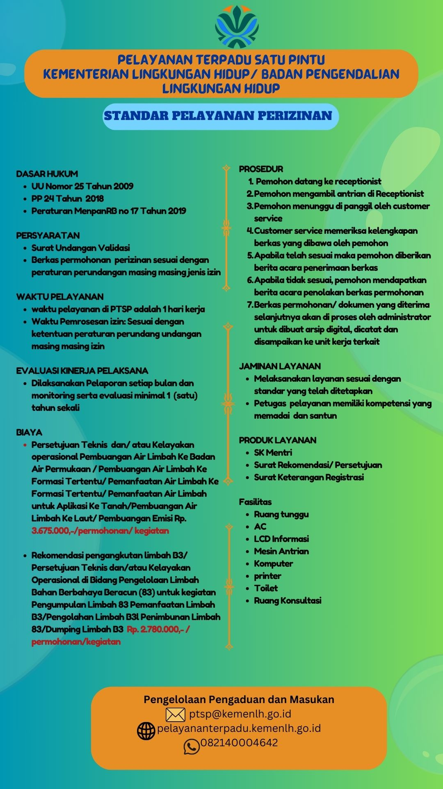
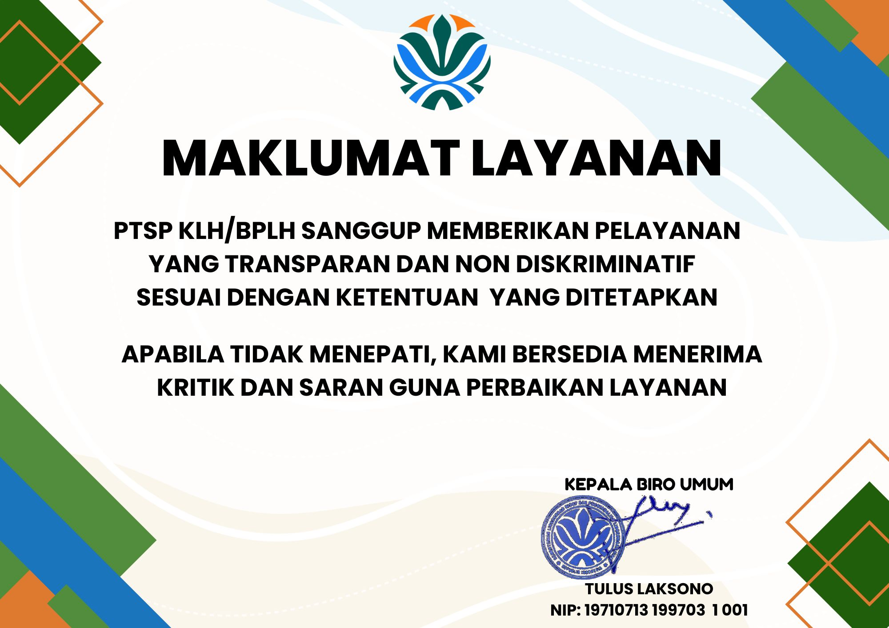

PTSP Lingkungan Hidup
Pelayanan Terpadu Satu Pintu (PTSP) KLH/BPLH adalah gerbang tunggal permohonan perizinan dan nonperizinan lingkungan hidup — satu loket, alur yang jelas, transparan, dan nondiskriminatif.
Sumber konten: pelayananterpadu.kemenlh.go.id
Visi & Misi
“Terwujudnya pelayanan perizinan dan nonperizinan yang prima.”
Pelayanan prima dicirikan dengan penerapan prinsip pelayanan publik untuk mendukung Reformasi Birokrasi, yang memastikan bahwa:
- PTSP menjadi trigger sekaligus instrumen KLH/BPLH sebagai indikator memperbaiki kualitas pelayanan publik dari waktu ke waktu.
- Prinsip nondiskriminatif dan transparan (Inpres 9 Tahun 2011 tentang Rencana Aksi Pencegahan dan Pemberantasan Korupsi) dapat diukur pencapaiannya dalam penyelenggaraan pelayanan publik di KLH/BPLH.
- Sistem PTSP memperkuat mekanisme checks and balances dalam tata kelola pemerintahan yang baik.
Untuk mewujudkan pelayanan publik yang maksimal, nondiskriminatif, dan transparan, PTSP melakukan penataan dan penyempurnaan sistem pelayanan:
- Meningkatkan kualitas pelayanan perizinan dan nonperizinan kepada masyarakat sesuai UU Nomor 25 Tahun 2009 tentang Pelayanan Publik.
- Melayani pengaduan dan keluhan terhadap pelayanan dengan cepat dan segera menindaklanjutinya.
- Memelihara dan meningkatkan profesionalisme dalam pelayanan menuju pelayanan prima.
- Melaksanakan survei, monitoring, dan evaluasi pelayanan.
Tugas & Fungsi
Sebagai unit penyelenggara pelayanan publik, PTSP-KLH/BPLH mempunyai tugas pokok dan fungsi berikut.
Menerima & memeriksa permohonan izin
Menerima dan memeriksa permohonan izin berikut kelengkapan persyaratan administrasi, mencatat, dan memberikan tanda bukti diterima atau ditolaknya sebuah permohonan izin.
Melayani permohonan nonperizinan
Menerima, mencatat, dan memberikan tanda terima diterimanya permohonan nonperizinan.
Meneruskan ke unit kerja teknis
Menyampaikan seluruh permohonan perizinan dan nonperizinan kepada unit kerja setingkat Eselon II di lingkungan KLH/BPLH sesuai bidang tugasnya, untuk proses pembahasan teknis, verifikasi lapangan, dan penyiapan rancangan keputusannya.
Standar Pelayanan Perizinan
Ringkasan standar pelayanan PTSP — dasar hukum, persyaratan, waktu, biaya, dan prosedur.

Dasar hukum
- UU Nomor 25 Tahun 2009 tentang Pelayanan Publik
- PP 24 Tahun 2018
- Peraturan MenpanRB No 17 Tahun 2019
Persyaratan & waktu
- Surat undangan validasi dan berkas permohonan perizinan sesuai peraturan perundangan masing-masing jenis izin.
- Waktu pelayanan di PTSP: 1 hari kerja; waktu pemrosesan izin mengikuti ketentuan peraturan masing-masing izin.
Biaya (PNBP)
- Persetujuan Teknis dan/atau Kelayakan Operasional pembuangan/pemanfaatan air limbah & pembuangan emisi: Rp 3.675.000,- per permohonan/kegiatan.
- Rekomendasi pengangkutan limbah B3 / Persetujuan Teknis pengelolaan limbah B3: Rp 2.780.000,- per permohonan/kegiatan.
Produk layanan
- SK Menteri
- Surat Rekomendasi / Persetujuan
- Surat Keterangan Registrasi
Maklumat Layanan

Siap mengajukan permohonan?
Isi formulir permohonan perizinan dan nonperizinan secara daring melalui PTSP Online — berkas divalidasi sesuai standar pelayanan di atas.
Hubungi PTSP
ptsp@kemenlh.go.id
Situs PTSP
pelayananterpadu.kemenlh.go.id · situs lain
0821-4000-4642